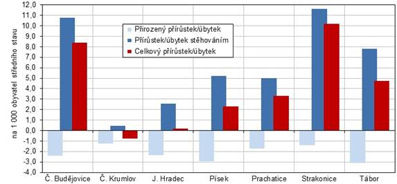

Počet obyvatel: 653 227
Obyvatel stále přibývá, ale přirozený přírůstej zůstává záporný
Obyvatel přibývá díky zahraniční migraci

Počet obyvatel: 653 227
Obyvatel stále přibývá, ale přirozený přírůstej zůstává záporný
Obyvatel přibývá díky zahraniční migraci
Jihořeský kraj patří mezi ty méně zalidněné
Hustota zalidnění je asi 64,9 obyvatel/km2
Nejhustěji zalidněné jsou České Budějovice